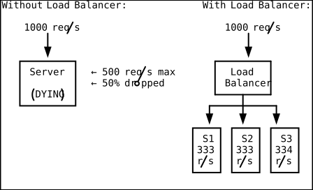
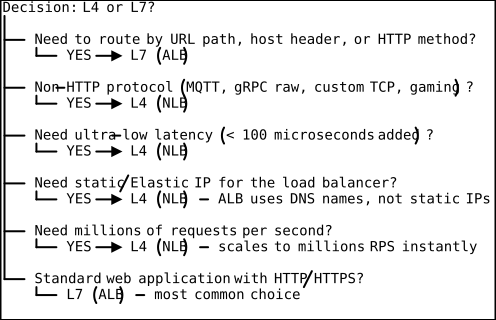
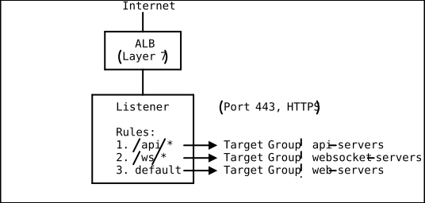
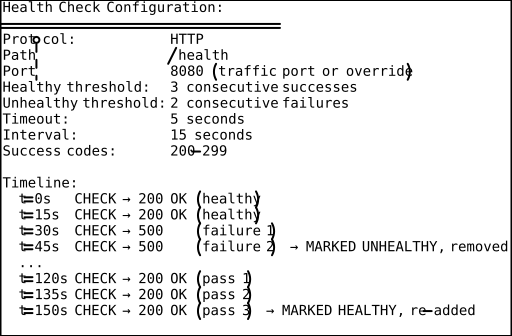
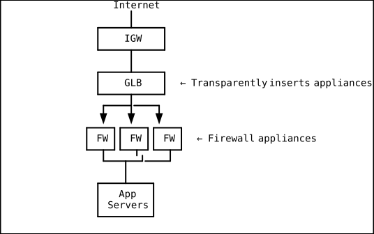
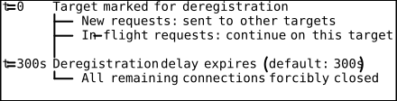
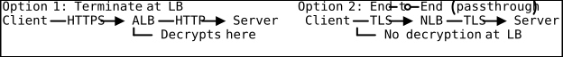
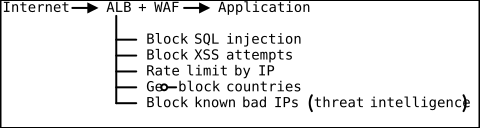
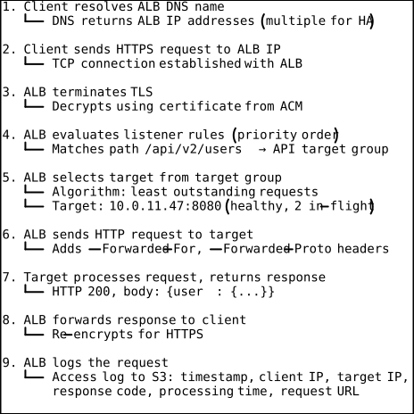

Load Balancing Architecture
Introduction
Every production system faces the same fundamental problem: a single server has finite capacity. It can handle a certain number of concurrent connections, process a certain number of requests per second, and consume a fixed amount of CPU and memory. When demand exceeds that capacity, the server either slows down, starts dropping requests, or crashes. Load balancing solves this by distributing incoming traffic across multiple servers, ensuring no single server bears an unsustainable load.
But modern load balancing is far more than round-robin traffic distribution. It encompasses health checking, SSL termination, content-based routing, authentication, rate limiting, and integration with web application firewalls. This document explores load balancing architecture in depth, covering Layer 4 vs Layer 7 decisions, AWS load balancer types, routing algorithms, and advanced patterns for production deployments.
Why Load Balancing Exists
The Single Server Problem

Load balancers provide:
- Horizontal scalability: Add more servers instead of buying bigger ones
- High availability: If one server dies, traffic routes to healthy ones
- Maintenance without downtime: Drain connections from a server, update it, bring it back
- Geographic distribution: Route users to the nearest server cluster
- Security: Centralized SSL termination, WAF integration, DDoS protection
Layer 4 vs Layer 7 Load Balancing
The OSI Model Context
Layer 7: Application HTTP, HTTPS, WebSocket ← ALB operates here
Layer 6: Presentation SSL/TLS
Layer 5: Session Connections
Layer 4: Transport TCP, UDP ← NLB operates here
Layer 3: Network IP addressing
Layer 2: Data Link MAC addressing
Layer 1: Physical Electrical signals
Layer 4 (Transport Layer)
Layer 4 load balancers route traffic based on IP address and TCP/UDP port. They do not inspect the content of packets — they see source IP, destination IP, source port, and destination port. This makes them extremely fast (millions of packets per second) and protocol-agnostic.
Pros: Ultra-low latency, handles any TCP/UDP protocol, simple Cons: Cannot make routing decisions based on content (URL path, headers, cookies)
Layer 7 (Application Layer)
Layer 7 load balancers understand HTTP/HTTPS. They can inspect headers, URLs,
cookies, and even request bodies. This enables sophisticated routing: send
/api/* to one set of servers and /static/* to another; route based on the
Host header for multi-tenant applications; inject authentication.
Pros: Content-based routing, SSL termination, authentication, rich health checks Cons: Higher latency (must parse HTTP), limited to HTTP/HTTPS/WebSocket
When to Choose Which

AWS Application Load Balancer (ALB)
Architecture

Core Concepts
Listeners: Accept connections on a specified port and protocol (HTTP:80, HTTPS:443). An ALB can have multiple listeners.
Rules: Each listener has rules evaluated in priority order. Rules match on conditions (path, host, headers, query strings, source IP) and forward to a target group.
Target Groups: A set of targets (EC2 instances, IP addresses, Lambda functions, or other ALBs) that receive traffic. Each target group has its own health check configuration.
Listener Rules Deep Dive
# CloudFormation: ALB with path-based and host-based routing
Resources:
ALBListener:
Type: AWS::ElasticLoadBalancingV2::Listener
Properties:
LoadBalancerArn: !Ref ALB
Port: 443
Protocol: HTTPS
Certificates:
- CertificateArn: !Ref ACMCertificate
DefaultActions:
- Type: forward
TargetGroupArn: !Ref WebTargetGroup
ApiRule:
Type: AWS::ElasticLoadBalancingV2::ListenerRule
Properties:
ListenerArn: !Ref ALBListener
Priority: 10
Conditions:
- Field: path-pattern
Values: ["/api/*"]
Actions:
- Type: forward
TargetGroupArn: !Ref ApiTargetGroup
AdminRule:
Type: AWS::ElasticLoadBalancingV2::ListenerRule
Properties:
ListenerArn: !Ref ALBListener
Priority: 20
Conditions:
- Field: host-header
Values: ["admin.example.com"]
- Field: source-ip
Values: ["203.0.113.0/24"] # Corporate IP range only
Actions:
- Type: forward
TargetGroupArn: !Ref AdminTargetGroupHealth Checks
ALB sends periodic health check requests to targets. Unhealthy targets are removed from rotation; they are re-added when they pass consecutive health checks.

A good health check endpoint should:
- Test downstream dependencies (database connectivity, cache reachability)
- Return quickly (under 1 second)
- Be lightweight (no heavy computation)
- Return 200 only when the instance is truly ready to serve traffic
# Example health check endpoint (Flask)
@app.route('/health')
def health():
try:
# Check database connection
db.session.execute(text('SELECT 1'))
# Check Redis connection
redis_client.ping()
return jsonify({"status": "healthy"}), 200
except Exception as e:
return jsonify({"status": "unhealthy", "error": str(e)}), 503AWS Network Load Balancer (NLB)
Architecture
NLB operates at Layer 4 and is optimized for extreme performance:
- Handles millions of requests per second
- Ultra-low latency (microseconds added, not milliseconds)
- Provides static IP addresses (one per AZ) or Elastic IPs
- Preserves the client source IP (unlike ALB, which uses its own IP)
NLB Use Cases
# NLB for a gRPC service
aws elbv2 create-load-balancer \
--name grpc-nlb \
--type network \
--subnets subnet-a subnet-b
# NLB target group with TCP health checks
aws elbv2 create-target-group \
--name grpc-targets \
--protocol TCP \
--port 50051 \
--vpc-id vpc-123abc \
--health-check-protocol TCP \
--health-check-port 50051Common NLB use cases:
- gRPC services (L4 TCP)
- MQTT brokers (IoT messaging)
- Gaming servers (UDP)
- Financial trading systems (microsecond latency matters)
- VPN termination
- Services requiring static IPs (firewall allowlisting)
- Forwarding to ALB (NLB as a PrivateLink-compatible frontend)
Gateway Load Balancer (GLB)
Purpose
GLB is designed for deploying third-party virtual network appliances (firewalls, intrusion detection, deep packet inspection) transparently in the traffic path.

GLB uses the GENEVE protocol (UDP port 6081) to encapsulate traffic to/from appliances, preserving original packet headers.
Sticky Sessions (Session Affinity)
What Are Sticky Sessions?
Sticky sessions ensure that a user’s requests are always routed to the same backend server. ALB achieves this via cookies.
Types of Stickiness
Duration-based (ALB-generated cookie):
The ALB creates a cookie (AWSALB) that maps the user to a specific target.
Duration is configurable (1 second to 7 days).
Application-based (your cookie):
Your application sets a cookie (e.g., JSESSIONID), and the ALB uses it to
maintain affinity.
Pros and Cons
PROS: CONS:
+ Simple for stateful apps - Uneven load distribution
+ Works with legacy apps (power users hit one server)
+ No shared session store needed - Server failure loses sessions
- Makes scaling harder
- Prevents zero-downtime deploys
Best practice: Avoid sticky sessions. Externalize session state to Redis (ElastiCache) or DynamoDB. This makes your application truly stateless, enabling seamless scaling and zero-downtime deployments.
Connection Draining (Deregistration Delay)
When a target is being removed (scaling in, deployment, health check failure), connection draining allows in-flight requests to complete before the target is deregistered.

For microservices with short requests, reduce the delay to 30-60 seconds. For WebSocket applications, you may need the full 300 seconds or more.
# Set deregistration delay to 30 seconds
aws elbv2 modify-target-group-attributes \
--target-group-arn arn:aws:... \
--attributes Key=deregistration_delay.timeout_seconds,Value=30Cross-Zone Load Balancing
Without cross-zone: With cross-zone:
AZ-a: 2 targets (50% traffic) AZ-a: 2 targets (20% each)
AZ-b: 8 targets (50% traffic) AZ-b: 8 targets (10% each)
Each AZ-a target: 25% total Even distribution regardless
Each AZ-b target: 6.25% total of how many targets per AZ
- ALB: Cross-zone enabled by default (free)
- NLB: Cross-zone disabled by default (charges apply when enabled)
SSL/TLS Termination
Where to Terminate TLS

Terminate at ALB (most common):
- ALB handles the CPU-intensive TLS handshake
- Backend servers receive plain HTTP (simpler, faster)
- Certificates managed via ACM (AWS Certificate Manager)
- ALB can inspect HTTP headers for routing
End-to-end encryption:
- Required for compliance (PCI-DSS may require encryption in transit everywhere)
- Use NLB with TCP passthrough, or ALB with re-encryption to backend
# Create HTTPS listener with ACM certificate
aws elbv2 create-listener \
--load-balancer-arn arn:aws:elasticloadbalancing:... \
--protocol HTTPS \
--port 443 \
--certificates CertificateArn=arn:aws:acm:us-east-1:123456789012:certificate/abc-123 \
--ssl-policy ELBSecurityPolicy-TLS13-1-2-2021-06 \
--default-actions Type=forward,TargetGroupArn=arn:aws:...SSL Policy Selection
Choose TLS policies based on your security requirements:
ELBSecurityPolicy-TLS13-1-2-2021-06: TLS 1.3 + 1.2 (recommended)ELBSecurityPolicy-TLS13-1-3-2021-06: TLS 1.3 only (most secure)- Legacy policies for older clients that need TLS 1.0/1.1 (avoid if possible)
WAF Integration
AWS WAF can be attached directly to an ALB to inspect and filter requests before they reach your application:

# Associate WAF web ACL with ALB
aws wafv2 associate-web-acl \
--web-acl-arn arn:aws:wafv2:us-east-1:123456789012:regional/webacl/my-acl/abc123 \
--resource-arn arn:aws:elasticloadbalancing:us-east-1:123456789012:loadbalancer/app/my-alb/abc123Load Balancing Algorithms
Round Robin (ALB default)
Requests are distributed to targets in sequential order. Simple and fair when all targets are identical.
Request 1 → Server A
Request 2 → Server B
Request 3 → Server C
Request 4 → Server A (cycle repeats)
Least Outstanding Requests (ALB)
Routes to the target with the fewest in-flight requests. Ideal when request processing times vary significantly (some requests take 10ms, others take 5s).
Server A: 3 in-flight
Server B: 1 in-flight ← Next request goes here
Server C: 7 in-flight
Enable this on the target group:
aws elbv2 modify-target-group-attributes \
--target-group-arn arn:aws:... \
--attributes Key=load_balancing.algorithm.type,Value=least_outstanding_requestsWeighted Random with Anomaly Mitigation (ALB)
Available since 2023. Distributes traffic randomly with weights, while automatically detecting and reducing traffic to underperforming targets (those with elevated error rates or latency). This provides a self-healing property: if a target starts failing, the ALB automatically sends it less traffic without removing it entirely.
Flow Hash (NLB)
NLB uses a flow hash algorithm based on: protocol, source IP, source port, destination IP, destination port, and TCP sequence number. All packets in a TCP connection go to the same target.
Blue/Green and Canary Deployments
Weighted Target Groups
ALB supports forwarding rules with weighted target groups, enabling gradual traffic shifting:
# CloudFormation: Weighted routing for canary deployment
WeightedForwardAction:
Type: AWS::ElasticLoadBalancingV2::ListenerRule
Properties:
ListenerArn: !Ref Listener
Priority: 1
Conditions:
- Field: path-pattern
Values: ["/*"]
Actions:
- Type: forward
ForwardConfig:
TargetGroups:
- TargetGroupArn: !Ref BlueTargetGroup
Weight: 90
- TargetGroupArn: !Ref GreenTargetGroup
Weight: 10
TargetGroupStickinessConfig:
Enabled: true
DurationSeconds: 600Deployment progression:
Phase 1: Blue=100%, Green=0% (before deployment)
Phase 2: Blue=90%, Green=10% (canary: test with 10%)
Phase 3: Blue=50%, Green=50% (if canary is healthy)
Phase 4: Blue=0%, Green=100% (fully shifted)
Request Flow: End to End

Monitoring and Troubleshooting
Key CloudWatch Metrics
| Metric | What It Tells You |
|---|---|
| RequestCount | Total requests processed |
| TargetResponseTime | Latency from target (p50, p95, p99) |
| HTTPCode_Target_5XX_Count | Server errors from targets |
| HTTPCode_ELB_5XX_Count | Errors from the ALB itself (overloaded) |
| HealthyHostCount | Number of healthy targets |
| UnHealthyHostCount | Number of unhealthy targets |
| ActiveConnectionCount | Current open connections |
| RejectedConnectionCount | Connections rejected (target at capacity) |
| SurgeQueueLength (Classic LB) | Requests queued (approaching limit) |
Access Logs
ALB access logs capture every request processed:
# Enable access logs
aws elbv2 modify-load-balancer-attributes \
--load-balancer-arn arn:aws:... \
--attributes \
Key=access_logs.s3.enabled,Value=true \
Key=access_logs.s3.bucket,Value=my-alb-logs \
Key=access_logs.s3.prefix,Value=prod-albPractical Takeaways
-
Default to ALB for HTTP/HTTPS workloads. It covers 90% of use cases with path-based routing, health checks, and WAF integration.
-
Use NLB only when you need L4 (non-HTTP), static IPs, extreme performance, or source IP preservation.
-
Externalize session state. Avoid sticky sessions. Use ElastiCache Redis or DynamoDB for session storage.
-
Tune health checks aggressively. The default interval of 30 seconds with a healthy threshold of 5 means it takes 2.5 minutes to recover from a health check flap. Use 10-15 second intervals and a threshold of 2-3 for faster response.
-
Use Least Outstanding Requests algorithm instead of Round Robin for workloads with variable processing times.
-
Enable access logs from day one. When something goes wrong at 3 AM, you will be grateful for the request-level audit trail.
-
Set appropriate deregistration delay. 300 seconds is too long for most microservices. Match it to your longest expected request duration.
-
Use weighted target groups for safe deployments. Canary with 5-10% traffic before full rollout.
DSA Connections
Priority Queues (Min-Heaps) — Least Outstanding Requests Algorithm
A priority queue backed by a binary min-heap always surfaces the element with the smallest key in O(log n) time for both extraction and insertion. The ALB’s “Least Outstanding Requests” routing algorithm is a direct application of this data structure: the load balancer maintains a min-heap of backend targets keyed by their current count of in-flight requests. When a new request arrives, the ALB extracts the target with the fewest outstanding requests in O(log n), forwards the request, and re-inserts the target with an incremented count. When a response returns, the target’s count is decremented and the heap is rebalanced. This is significantly more efficient than scanning all targets linearly (O(n) per request) and is why ALB can handle thousands of targets without routing latency degradation. Real-world load balancers like HAProxy and Envoy use this same heap-based approach for their least-connections algorithms.
Consistent Hashing — Flow Hash and Session Affinity
Consistent hashing maps both servers and requests onto a virtual ring using a hash function, so that adding or removing a server only redistributes a minimal fraction of keys. The NLB’s flow hash algorithm is a form of consistent hashing: it hashes a tuple of (source IP, source port, destination IP, destination port, protocol) to determine which target receives the flow. All packets within a TCP connection hash to the same point on the ring and thus reach the same target, providing natural session affinity without cookies. When a target is removed (health check failure or deregistration), only the flows that hashed to that target’s segment of the ring are redistributed to adjacent targets — existing connections to healthy targets are undisturbed. ALB sticky sessions using the AWSALB cookie also apply a hash-based mapping from cookie value to target, though at Layer 7 rather than Layer 4.
Round-Robin Scheduling — Default ALB Distribution Algorithm
Round-robin is a scheduling algorithm that assigns resources to consumers in a fixed circular order, ensuring each consumer gets an equal share. The ALB’s default routing algorithm cycles through healthy targets sequentially: Request 1 goes to Server A, Request 2 to Server B, Request 3 to Server C, then back to A. This provides perfect fairness when all targets are identical in capacity and all requests take equal time to process. However, round-robin has a well-known weakness in systems with variable request durations: if one request takes 5 seconds while others take 10 milliseconds, the assigned server accumulates a backlog while others sit idle. This is exactly why the ALB offers the Least Outstanding Requests algorithm as an alternative — it adapts to heterogeneous request costs, whereas round-robin assumes uniform cost. The same trade-off appears in CPU scheduling: simple round-robin works for equal time-slice processes, but shortest-job-first or priority scheduling is needed when task durations vary.
Weighted Random Sampling — Canary Deployments with Weighted Target Groups
Weighted random sampling selects elements from a collection where each element has a weight that determines its probability of being chosen. ALB’s weighted target group routing for canary deployments implements exactly this: when configured with Blue=90% and Green=10%, each incoming request is routed to the Blue target group with probability 0.9 and to the Green target group with probability 0.1, using a weighted random selection. The underlying implementation generates a random number and compares it against the cumulative weight distribution — a technique known as the alias method or roulette-wheel selection in algorithm literature. This is the same algorithm used in A/B testing frameworks, genetic algorithm selection operators, and reservoir sampling. The gradual shift from 90/10 to 50/50 to 0/100 during a deployment is simply adjusting the weight vector over time, providing a statistically controlled traffic migration.